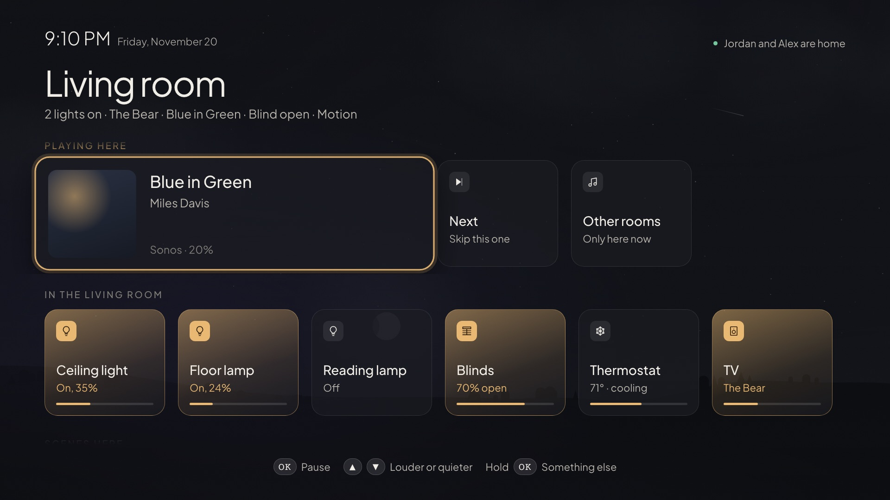

What plays is a card among the room's things.
The record fills the screen only once the TV has rested three minutes.
Somebody listening
is looking at a list of lamps and scenes they did not ask for.